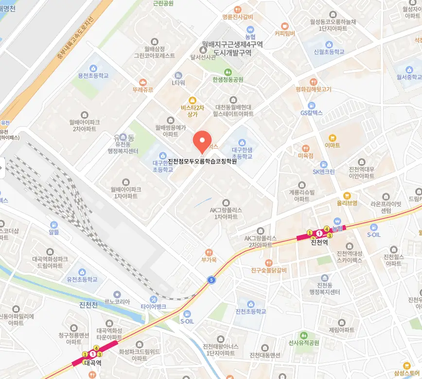

부모님은 먼저 아이가 현재 어떤 과목에서 어려움을 겪는지 파악해요. 다음으로는 대구유천동 초등학원의 강사진 경력과 교육 철학을 살펴보는 것이 중요해요. 또, 수업 시간표가 가정 생활과 맞는지 확인해요. 주변 학부모들의 후기와 실제 성적 향상 사례를 조사해요. 마지막으로는 체험 수업을 직접 경험해보면서 분위기와 교육 방식이 맞는지 판단해요.
대구유천동은 주거 환경이 안정적이며, 교육 열기가 높은 지역으로 알려져 있어요. 초등 저학년은 기초 개념을 시각 자료와 놀이 중심으로 접하면서 집중력이 자연스럽게 길러져요. 초등 고학년은 논리적 사고를 키우기 위해 문제 해결 과정을 스스로 탐색하도록 지도해요. 중학생은 장기 목표 설정과 주기적인 학습 점검을 통해 자기 주도 학습 능력을 강화해요. 고등학생은 시험 대비 전략과 심화 학습을 병행하면서 효율적인 복습 체계를 구축해요. 전체 학년은 다양한 형태의 자료를 활용해 서술형 문제 접근법을 연습하도록 돕고 있어요
첫 번째로 와와학습코칭센터는 반복 패턴 점검을 통해 학습 오류를 조기에 발견하고 교정하는 방식을 적용하고 있어요. 두 번째로 주요 대상은 계산 속도가 다소 느리지만 꾸준히 노력하는 초등 6학년 학생이며, 맞춤형 피드백을 제공해요. 세 번째로 커리큘럼은 기본 개념 학습 심화 문제 풀이 실전 모의고사 순으로 구성돼 효과적인 단계별 성장에 초점을 맞추고 있어요. 네 번째로 강점으로는 개별 진도 관리와 실수 확률 분석을 기반으로 한 맞춤 학습 설계가 돋보이며, 학부모와의 정기 상담을 통해 학습 방향을 지속적으로 조정해요. 다섯 번째로 수강료는 첼로입시 200,000원 | 첼로일반A 120,000원으로 책정돼 가성비 높은 선택이 가능하다고 생각해요
| 학원명 | 와와학습코칭학원 |
| 수강료 | 첼로입시 200,000원 | 첼로일반A 120,000원 |
CURRICULUM
학생마다 학습 속도가 다르기 때문에 맞춤 진도 시트를 매주 업데이트해요. 첫 번째 단계에서는 기본 개념을 복습하고 핵심 포인트를 정리해요. 두 번째 단계에서는 시간 제한 문제 풀이로 실전 감각을 연습해요. 세 번째 단계에서는 오답 노트를 활용해 약점을 보완하고 재학습을 진행해요. 마지막으로, 주 1회, 120분 수업에서는 수행 평가 대비 심화 과제를 제공해요. 이런 순환 구조가 학습 지속성을 높이고 성취도를 끌어올리는 데 도움이 돼요. 또한, 학습 동기 부여를 위해 목표 설정과 성취 체크를 병행해요.
영어 작문에서 감점률 0%를 달성하려면 단순히 단어를 나열하는 게 아니라 문장 패턴을 꼼꼼하게 분석해야 해요. 많은 학생들이 문법은 잘 아는데 막상 글을 쓰면 실수를 하곤 하죠. 목표별로 행동 실천 점검 목록을 스스로 만들어 보는 연습을 하면 이런 실수를 줄일 수 있어요. 대구유천동 인근에는 대구유천동 초등학원이 너무 많아서 편의점 옆 골목으로 들어가면 대구유천동 초등학원이 보이기도 해요. 이런 환경 때문에 무작정 가까운 곳만 선택하는 실수를 범하기 쉬워요. 학습 점검 주제를 미리 고지받지 못하면 아이가 준비 없이 수업에 임하게 되니까 꼭 교육 과정을 확인해야 해요. 대구유천동 초등학원을 등록한 후에도 관리가 소홀하면 성적이 정체되기 때문에 지속적인 의견 전달이 중요해요.
성장 중심 교육은 학생 스스로의 잠재력을 끌어올리는 데 초점을 맞추어요. 진단평가를 통해 수준별 반을 편성하고, 각 반에 맞는 과제를 설계해요. 수업은 능동적 사고가 자연스럽게 흐르도록 설계돼 있어 학생이 오류를 스스로 인식하고 고칠 수 있도록 유도해요. 특히 반복적인 강조와 리듬형 말투를 활용해 학습 몰입도를 높이고, 매주 피드백 시간을 별도로 두어 학습 진행 상황을 점검해요. 대구유천동 내에서 다양한 학습 지원 프로그램과 연계해 학생들의 전인적 성장을 돕고 있어요.
중학교 3학년 학생으로 진지하지만 응용 문제에 자신감이 부족한 경우에 적합해요. 시험 직전에도 부족함을 느끼는 학습자는 체계적인 보강과 피드백을 통해 실력을 끌어올릴 수 있어요. 교과 외 활동이 많아 시간 관리가 어려운 학생도 맞춤형 일정 관리 프로그램으로 효율을 높일 수 있어요. 스스로 공부하려는 의지가 있지만 방법을 몰라 고민하는 학생에게 특히 도움이 돼요. 특히 과목별 심화 학습이 필요한 경우에는 맞춤형 과제와 피드백을 통해 깊이 있는 이해를 도울 수 있어요. 이러한 맞춤 전략은 장기적인 목표 설정과 연계되어 학습 효율을 극대화해요.
우리 아이는 매주 마무리 퀴즈를 통해 개념을 자연스럽게 복습하고 있어요. 꾸준히 진행되는 성장 점검 체계가 학부모에게 큰 믿음이 되고, 첫 수업에서 느낀 혼란이 빠르게 확신으로 바뀌었어요. 시험이 끝난 뒤에도 복기를 꼭 하게 돼서 실전 감각이 유지돼요. 학습 환경이 밝은 백색 계열로 꾸며져 있어 시야가 맑고 집중력이 향상된 느낌이에요. 이런 경험을 통해 아이는 스스로 학습에 대한 책임감을 키우고 있어요